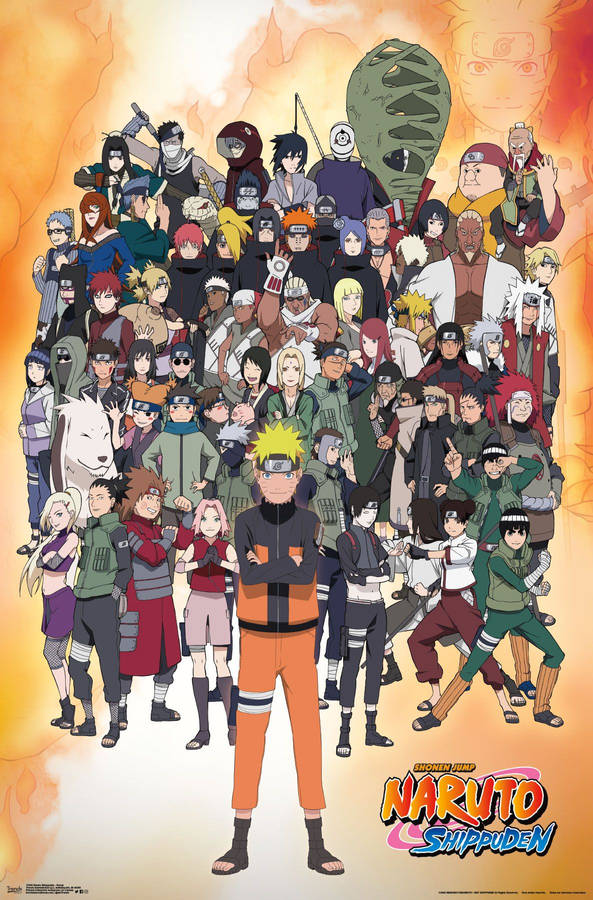

Naruto

Naruto sigue la historia de Naruto Uzumaki, un joven ninja que sueña con convertirse en el Hokage, el líder de su aldea, para ser reconocido por todos. A lo largo de la serie, Naruto enfrenta desafíos mientras aprende técnicas ninja, forma amistades con otros ninjas como Sasuke y Sakura, y lucha contra la discriminación por llevar sellado dentro de él al Zorro de Nueve Colas, una criatura peligrosa que atacó su aldea años atrás.
Naruto Shippuden
Naruto Shippuden continúa la historia tras un salto temporal, donde Naruto regresa a su aldea más maduro y poderoso. Ahora se enfrenta a amenazas más grandes, como la organización Akatsuki, que busca capturar a las Bestias con Cola. La serie explora temas más oscuros, como la guerra y la pérdida, mientras Naruto intenta salvar a su amigo Sasuke de la oscuridad, al tiempo que cumple su destino y protege a su aldea de poderosos enemigos.